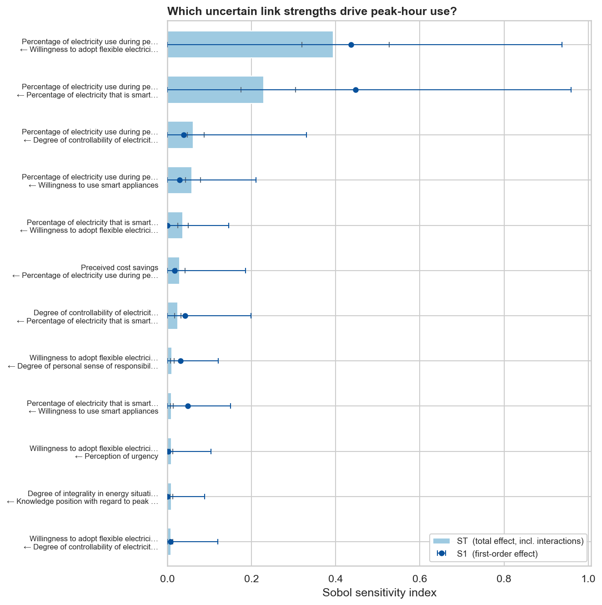
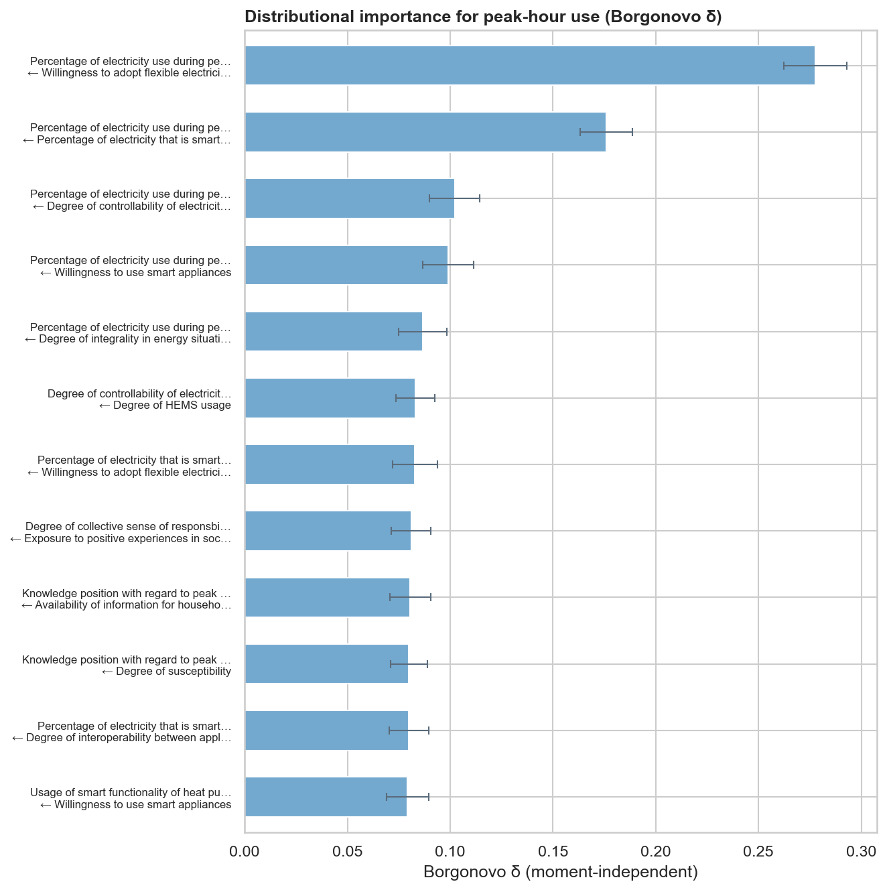
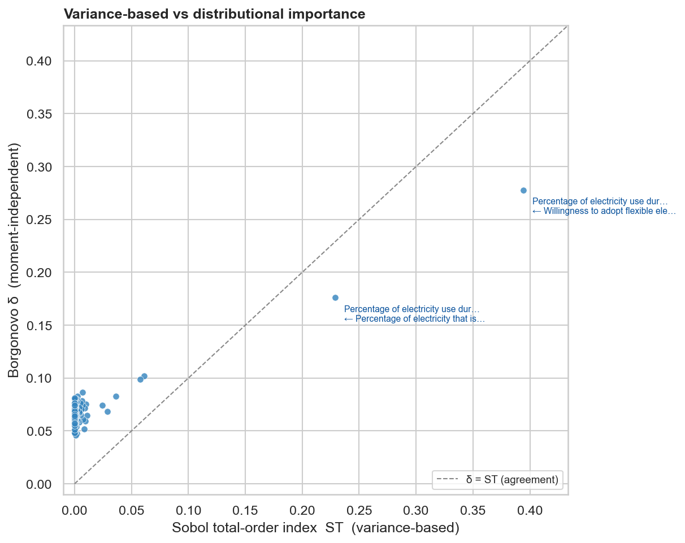
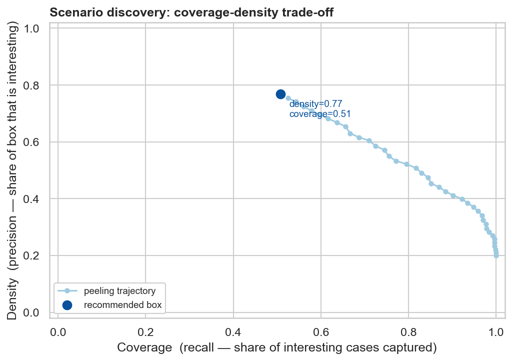
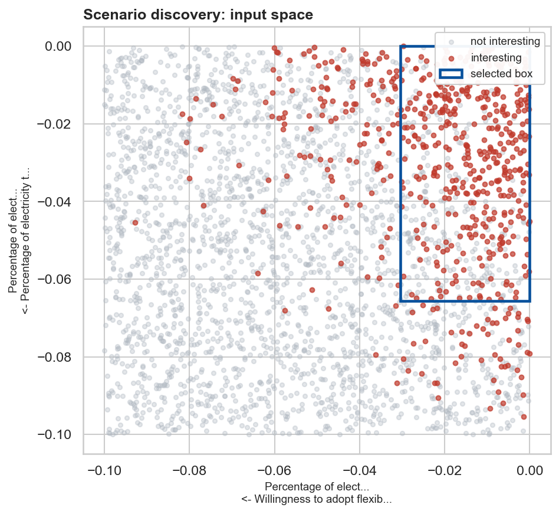

0Where these fit
Global sensitivity analysis
Ranks the model's uncertain parameters by how much each drives the variance of the outcome. Unlike intervention ranking (which ranks the levers you could pull) and unlike one-factor-at-a-time analysis, it accounts for the full input ranges and their interactions at once.
Scenario discovery
Localises the region of the input space where an outcome of concern concentrates — "under what combination of conditions does it go wrong?". The complement of GSA: GSA ranks drivers globally; scenario discovery draws a box around the danger.
1Global sensitivity analysis (Sobol)
Every causal link in a qualitative diagram has an uncertain strength. GSA asks: of all those uncertain strengths, which ones actually matter for the outcome? It draws a structured (Saltelli) sample over the parameters — the same uniform priors the simulator already uses — runs the model once per design point under a chosen intervention scenario, and decomposes the outcome variance into contributions per parameter.
from sip_systemsinsightpipeline import Extract, SDM
from sip_systemsinsightpipeline.plots import plot_gsa
s = Extract("Insulation_PeakEnergy.xlsx").extract_settings()
s.seed = 0; s.N = 1; s.t_end = 15; s.time_unit = "years"
s.parameter_value_aux = 0.3; s.parameter_value_stocks = 0.1
sdm = SDM(s)
voi = s.variable_of_interest[0]
# total runs = n * (d + 2); keep n modest on a large model for a first look
gsa_df = sdm.run_GSA(voi, n=128, seed=1)
fig = plot_gsa(gsa_df, top=12)The result is a tidy, ST-sorted table (one row per parameter):
| parameter (link strength) | S1 [95% CI] | ST [95% CI] |
|---|---|---|
| to Percentage of el... ← Willingness to adopt flexible elec... | 0.418 [0.29, 0.58] | 0.394 [0.31, 0.51] |
| to Percentage of el... ← Percentage of electricity that is ... | 0.231 [0.13, 0.34] | 0.229 [0.19, 0.29] |
| to Percentage of el... ← Degree of controllability of elect... | 0.037 [0.00, 0.11] | 0.061 [0.05, 0.08] |
| to Percentage of el... ← Willingness to use smart appliances | 0.054 [0.00, 0.12] | 0.058 [0.04, 0.07] |
| to Percentage of el... ← Willingness to adopt flexible elec... | 0.000 [0.00, 0.00] | 0.037 [0.03, 0.05] |
| to Preceived cost s... ← Percentage of electricity use duri... | 0.014 [0.00, 0.06] | 0.029 [0.02, 0.04] |

ST (bars) and first-order S1
(markers), with bootstrap confidence whiskers, for the 12 most influential link strengths.ST > S1 flags a parameter that matters
mainly in combination with others, while ST ≈ S1 means it acts independently. The
parameters at the top are where measurement or elicitation effort would most sharpen your
conclusions. Wide whiskers mean n is too small — the indices are
noisy; raise n (total runs grow as n·(d+2)).
[0, 1], but their estimator is a difference of
variance estimates, so for an unimportant parameter (true index ≈ 0) the raw estimate
can dip slightly below zero at finite n — a sampling artifact, not a real negative
effect. SIP therefore projects the estimate and its confidence interval onto
[0, 1] (the clip=True default of run_GSA): such a
parameter reports S1 = 0 with a one-sided interval like [0, 0.05] —
read as "indistinguishable from zero." The whiskers are an asymmetric BCa
(bias-corrected and accelerated) bootstrap interval, not a symmetric ± band, because
the sampling distribution of an index is skewed near the 0/1 boundaries (use
ci="percentile" for the plain bootstrap, or clip=False for the raw,
unconstrained estimates — a useful convergence check). Why a Sobol estimator can go negative at
all, and the trade-offs of the alternatives, are covered in
Choosing a sensitivity method.
1.1 Beyond variance: distributional (moment-independent) importance
Variance is only one feature of the output distribution. A parameter can leave the variance
almost unchanged yet reshape the tails or skew of the outcome — an effect a
variance decomposition understates. Moment-independent measures look at the shift in
the whole distribution instead. SIP offers two, both selected through the same
run_GSA call and both non-negative by construction (so they never show
the spurious negativity of a Sobol estimate). They also run on a plain Monte-Carlo ensemble — n
runs, not n·(d+2) — so they are cheaper, and reuse the same draws as scenario discovery.
# Borgonovo's delta: expected shift in the output *density* when a parameter is fixed
delta_df = sdm.run_GSA(voi, method="delta", n=3000, seed=2)
from sip_systemsinsightpipeline.plots import plot_moment_independent
plot_moment_independent(delta_df, measure="delta", top=12)
# PAWN: a CDF-based alternative
pawn_df = sdm.run_GSA(voi, method="pawn", n=3000, seed=2)
Plotting the variance-based ST against δ for every parameter shows where the two
agree and where they differ:

ST = 0 with
δ ≈ 0.05–0.09 is δ's positive floor near zero — the flip side of being
non-negative: irrelevant inputs read as a small positive δ rather than exactly zero.x₃ has Sobol S1 ≈ 0 yet δ ≈ 0.16, because its entire
influence is through an interaction. Reach for the moment-independent measures when you care about
tail / shape effects, suspect interaction-driven inputs, or simply want a non-negative
importance that needs no boundary handling — and lean on Sobol's S1 vs ST
split to read "acts alone vs through interactions." The trade-offs are laid out in
Choosing a sensitivity method.
2Scenario discovery (PRIM)
GSA ranks drivers globally. Scenario discovery instead localises: it draws an ensemble of parameter sets, labels the "cases of concern" (here: peak-hour use stays high despite the full intervention package), and finds an interpretable box of the input space where those cases concentrate.
from sip_systemsinsightpipeline import discover_scenarios
from sip_systemsinsightpipeline.plots import plot_scenario_tradeoff, plot_scenario_box
import numpy as np
X, y = sdm.sample_outcomes(n=1500, seed=2) # ensemble: inputs X, outcome y
threshold = float(np.quantile(y, 0.8)) # worst 20% = "high peak use"
result = discover_scenarios(X, y, threshold=threshold, direction="above",
method="prim", peel_alpha=0.05, min_coverage=0.5)
box = result.box
print(box.limits) # only the dimensions PRIM had to restrictOn the run shown here PRIM isolates a box with density 0.77 (precision) and coverage 0.51 (recall), restricting only 9 of 94 uncertain parameters (it holds 13% of all draws).


box.limits lists only the dimensions PRIM had to restrict:
those are the parameters whose values jointly produce the bad outcome. Every other input is left
unconstrained, and that is the finding — the danger does not depend on them. Read a box
as a sentence: "the concern concentrates when these few link strengths fall in
these ranges, regardless of everything else."
3CART: the same question as a tree
CART (a classification tree) is an alternative backend. It is good for cross-checking which variables matter and for regions that are not a single box:
res_cart = discover_scenarios(X, y, threshold=threshold, direction="above",
method="cart", max_depth=3, min_density=0.7, seed=0)
print(res_cart.splitting_variables)
for rule in res_cart.rules[:3]:
print(rule)Splitting variables: [smart-controlled] <- Wil..., Percentage of electricity use during peak hours (16.00-21..., Percentage of electricity use during peak hours (16.00-21..., Percentage of electricity use during peak hours (16.00-21... [peak use] <- [flexible-use willingness] > -0.0273 and [peak use] <- [smart-controlled] > -0.03918 and [peak use] <- [controllability] > -0.06377 -> density=0.920, coverage=0.345, mass=0.075
4Putting it together
With the existing intervention ranking and Loops That Matter, these two tools complete SIP's "analyse → find leverage → stress-test robustness" loop: rank the levers, optimize the budget, attribute behaviour to loops, then ask which assumptions the answer hinges on (GSA) and under what conditions it fails (scenario discovery).
5References
- Saltelli, A. et al. (2008). Global Sensitivity Analysis: The Primer. Wiley.
- Sobol', I. M. (2001). Global sensitivity indices for nonlinear mathematical models and their Monte Carlo estimates. Mathematics and Computers in Simulation, 55(1-3), 271-280.
- Friedman, J. H. & Fisher, N. I. (1999). Bump hunting in high-dimensional data. Statistics and Computing, 9(2), 123-143. (PRIM)
- Kwakkel, J. H. & Jaxa-Rozen, M. (2016). Improving scenario discovery for handling heterogeneous uncertainties. Environmental Modelling & Software, 79, 311-321.
- Herman, J. & Usher, W. (2017). SALib: An open-source Python library for sensitivity analysis. Journal of Open Source Software, 2(9), 97.